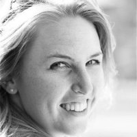
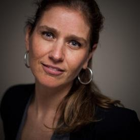
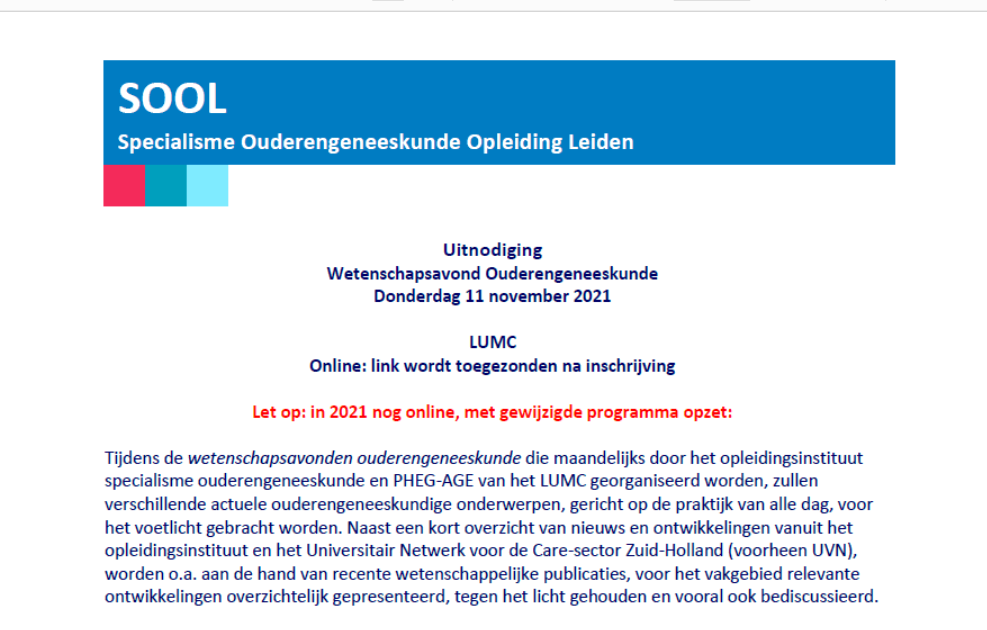
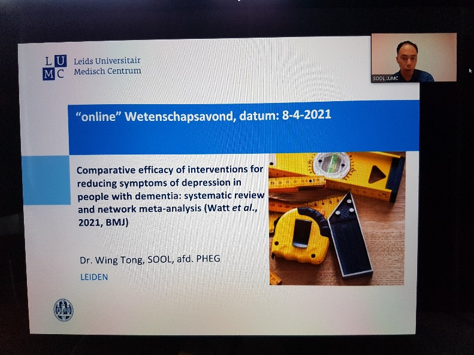
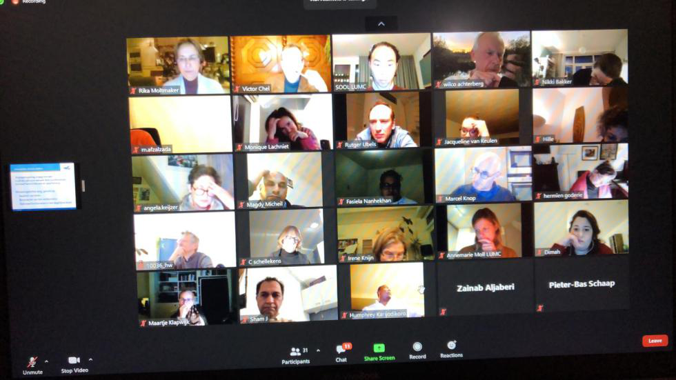
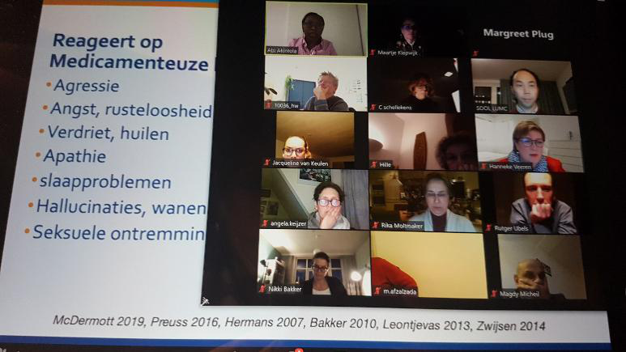
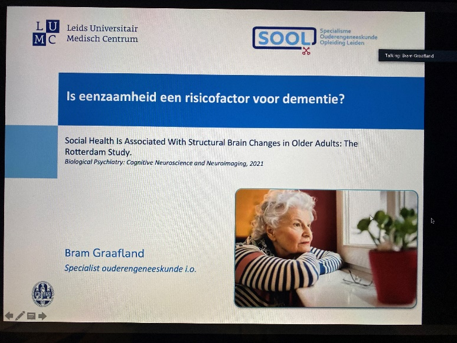
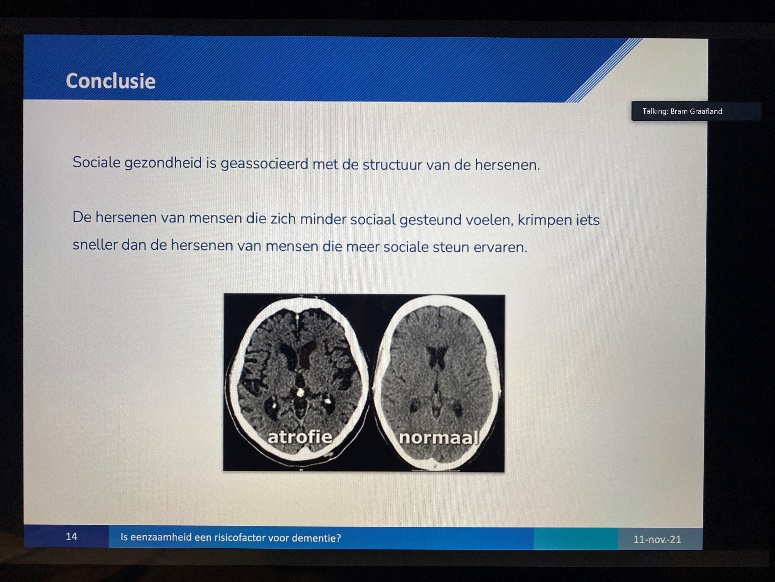
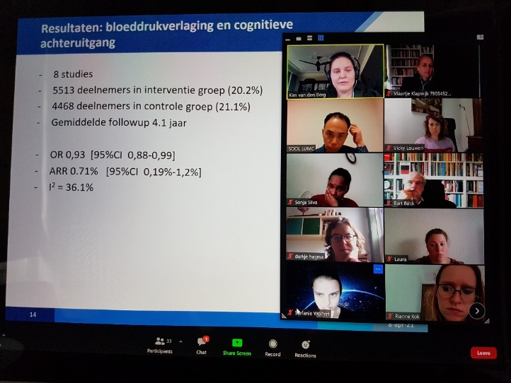

Wetenschap in 2021: veel successen, maar te weinig ontmoeting, dus niet helemaal tevreden
prof. dr. Wilco Achterberg
Net als vorig jaar, en net zoals in vele andere sectoren, hadden we in de wetenschap, laten we het netjes zeggen, een ‘Apart’ jaar. Zo gingen wij natuurlijk gewoon door met het verzamelen van de notulen van de crisisteams in verpleeghuizen,1 en hebben we naast de Nederlandse richtlijn COVID-19 Geriatrische Revalidatie, ook een internationale richtlijn opgeleverd.2 Ook het WLO onderzoek ging door, en in groepjes werd gewerkt aan een gezamenlijke dataverzameling op het gebied van pijn bij dementie. Dit leidde tot een mooie publicatie waarbij 3 AIOS betrokken waren.3 We hadden ook twee mooie promoties vanuit SOOL: Michelle Kromhout, vanuit haar voormalig rol als staflid bij SOOL promoveerde in mei op haar proefschrift over Cafeïne en probleem gedrag bij dementie, en Bistra Veleva was tijdens haar opleiding gestart met een wetenschapsstage over Vitamine D, en heeft dat daarna met steun van SOOL en Woonzorgcentrum Haaglanden uitgebreid tot een proefschrift dat zij eind 2021 met succes verdedigde. Met deze mooie promoties, en heel veel andere publicaties, zouden wij natuurlijk genoegzaam moet kunnen terugdenken aan 2021. Toch doe ik dat niet. Want wetenschap is alleen dan zinvol, als het het scharnier is tussen praktijk en theorie. En dat was natuurlijk heel lastig, in COVID-19 tijd, omdat we elkaar te weinig hebben ontmoet. Te weinig ontmoeting tussen AIOS en docenten, maar ook tussen wetenschappers, docenten, en AIOS. Bij de promotie van Michelle Kromhout mochten 10 mensen aanwezig zijn, dat is natuurlijk geen ontmoeting tussen wetenschap en praktijk meer te noemen.
Ook hebben we allerlei nieuwe docenten, en nieuwe onderzoekers op onze afdeling sinds 2020, en die hebben elkaar ook nog nooit ontmoet, weten mogelijk helemaal niet van elkaar wat er loopt, en dus waarvan men van elkaar kan leren.
In Leiden blijft wetenschap een speerpunt, en in 2022 kunnen we weer mooie dingen verwachten, zoals de promoties van Maartje Klapwijk (Januari) AIOTO’s Anouk Kabboord (februari) en Annelore van Dalen (maart), en later ook nog AIOTO’s Paulien van Dam en Maaike Scheffers. Maar we gaan ook werken aan verdere integratie van wetenschappelijk bewijs in het onderwijs, want dat is onze missie. Daarnaast gaan we ook ons andere mooie beleidspunt, interprofessioneel opleiden, een wetenschappelijk fundament geven. Het was een bijzonder jaar, maar we willen toch echt dat 2022 een beter jaar wordt, qua ontmoeting- een centraal punt in de persoonlijke en beroepsmatige ontwikkeling.
van Tol LS, Smaling HJA, Groothuijse JM, Doornebosch AJ, Janus SIM, Zuidema SU, Caljouw MAA, Achterberg WP, de Waal MWM. COVID-19 management in nursing homes by outbreak teams (MINUTES) - study description and data characteristics: a qualitative study. BMJ Open. 2021 Nov 30;11(11):e053235.
van Haastregt JCM, Everink IHJ, Schols JMGA, Grund S, Gordon AL, Poot EP, Martin FC, O'Neill D, Petrovic M, Bachmann S, van Balen R, van Dam van Isselt L, Dockery F, Holstege MS, Landi F, Pérez LM, Roquer E, Smalbrugge M, Achterberg WP. Management of post-acute COVID-19 patients in geriatric rehabilitation: EuGMS guidance. Eur Geriatr Med. 2021 Nov 20:1–14.
van der Steen JT, Westzaan A, Hanemaayer K, Muhamad M, de Waal MWM, Achterberg WP. Probable Pain on the Pain Assessment in Impaired Cognition (PAIC15) Instrument: Assessing Sensitivity and Specificity of Cut-Offs against Three Standards. Brain Sci. 2021 Jun 29;11(7):869.
Ontwikkelingen in de Lijn Wetenschappelijke Vorming

Maaike Scheffers-Barnhoorn
In 2021 mocht ik als docent bij het lijnonderwijs Wetenschappelijke Vorming van SOOL aan de slag. Met veel plezier kijk ik terug op mijn eerste periode als docent bij SOOL. Daarnaast vind ik het mooi om direct ook te hebben mogen ervaren dat onderwijs continu in ontwikkeling is, zo ook in het wetenschapsonderwijs. Het team Wetenschappelijke Vorming is divers qua achtergrond en ervaring. Er is kennis op het gebied van epidemiologie, kwalitatief onderzoek en onderwijskunde; en klinische praktijk ervaring in de ouderengeneeskunde. Het is juist deze dynamische mix die de verdere onderwijsontwikkeling in deze lijn faciliteert. Als staf hopen dat de onderwijsprogramma’s van de lijn Wetenschappelijke Vorming de AIOS inspireren voor de wetenschap, en hen goed onderleggen in de evidence based medicine (EBM), zodat ze dit met vertrouwen kunnen toepassen in hun dagelijks handelen.
Een belangrijk onderdeel van het wetenschapsonderwijs in de eerste jaar van de opleiding is de module Kritisch Lezen (KL). In 2021 is dit onderwijsprogramma gereviseerd, waarbij we de team based learning (TBL) onderwijsmethode hierin hebben verwerkt om de groepsdiscussie in dit onderwijs verder te faciliteren. We streven ernaar om de medisch inhoudelijke thema’s van de artikelen waar mogelijk te laten aansluiten bij onderwerpen uit basismodule. Een belangrijk onderdeel van het KL onderwijs is dat diverse onderzoeksdesigns, en de bijbehorende statistiek, aan bod komt. Deze kennis kan de AIOS verder ondersteunen in de uitwerking van hun referaten of CATs (Critical Appraisal of a Topic).
Verder zijn eerste stappen gezet om ook de basis principes van kwalitatief onderzoek te verwerken in het onderwijs. Dit wordt verwerkt in een KL sessie, en met ingang van 2022 starten we ook met workshops over kwalitatieve onderzoeksmethodologie (interview technieken). In 2022 wordt kwalitatief onderzoek ook standaard aangeboden als mogelijkheid voor het wetenschappelijk leeronderzoek (WLO), en wordt hier ten dele ook een apart onderwijsprogramma voor aangeboden. De eerste groep start in 2022 met dit kwalitatief WLO, met een onderwerp wat ze zelf hebben aangedragen.
Als laatste is het ook leuk om te vermelden dat afgelopen jaar de eerste stappen zijn gezet naar een interdisciplinaire samenwerking met de huisartsenopleiding op het gebied van het wetenschapsonderwijs. We willen kijken hoe we AIOS, docenten en praktijkopleiders kunnen ondersteunen in (al) hun vragen op het gebied van de wetenschap, mogelijk in de vorm van een online ‘EBM toolbox’. To be continued in 2022….
Wetenschapsavonden ouderengeneeskunde

Maartje Klapwijk, specialist ouderengeneeskunde
Het afgelopen jaar was door de voortdurende maatregelen rond COVID-19 weer een bijzonder jaar dat weer op meerdere niveaus voor aanpassingen van invulling werk maar ook van de nascholing zorgde. We hebben het hele jaar de eerste donderdag van de maand door het opleidingsinstituut specialisme ouderengeneeskunde en PHEG-AGE van het LUMC een nascholing werd georganiseerd hebben we dit digitaal gecontinueerd. Juist omdat er tijdens deze nascholingsavonden, die al sinds 2014 plaatsvinden, veel ruimte is voor interactie tussen specialisten ouderengeneeskunde en huisartsen (en zij die daarvoor in opleiding zijn) en leden van het Universitair Netwerk voor de Care sector Zuid-Holland (UNC-ZH) is dit voort gezet via de digitale versie via Zoom. Die kon alleen gevolgd worden na aanmelding via het secretariaat van het Specialisme Ouderengeneeskunde Opleiding Leiden (SOOL).


Opening; Opleiding en UNC-ZH
De eerste donderdag is ook de ‘terugkomdag’ van perifere opleiders, zodat meteen
hierna om 17.00 uur gestart kan worden met mededelingen vanuit het opleidingsinstituut en vanuit het UNC-ZH.
Voordrachten
Voor de digitale versie is gekozen voor twee plenaire voordrachten van elk twintig minuten met tien minuten om met elkaar in discussie te gaan en kennis te delen en over verschillende actuele ouderengeneeskundige onderwerpen. Hierna was er een pauze van 15 minuten. Daarna waren er 3 plenaire voordrachten. Van de vijf plenaire voordrachten, worden er in principe drie verzorgd door aios ouderengeneeskunde en twee door medisch specialisten uit binnen- en buitenland. Alle voordrachten zijn nadrukkelijk gericht op de toepasbaarheid in de praktijk en Evidence Based Medicine. De gebruikelijke onderbreking met een broodjesbuffet en na afloop een (netwerk)borrel is uiteraard bij de online bijeenkomsten vervallen.

Onderwerpen
De opkomst op deze avonden was erg goed, steeds rond de 40/50 deelnemers. Een aantal onderwerpen die besproken zijn in 2021 waren:
&nsbp;&nsbp;&nsbp; -&nsbp; Eenzaamheid een risicofactor voor dementie?
&nsbp;&nsbp;&nsbp; -&nsbp; GRZ in Europa
&nsbp;&nsbp;&nsbp; -&nsbp; Bewegen tegen depressie, helpt dat ook in het verpleeghuis?
&nsbp;&nsbp;&nsbp; -&nsbp; Afbouwen van antihypertensica op hoge leeftijd
&nsbp;&nsbp;&nsbp; -&nsbp; Cognitieve uitdagingen na heupfractuur bij voorheen zelfstandig wonende ouderen
&nsbp;&nsbp;&nsbp; -&nsbp; De resultaten van een jaar COVID-unit in het verpleeghuis
&nsbp;&nsbp;&nsbp; -&nsbp; Acute ouderenzorg en spoedzorg
&nsbp;&nsbp;&nsbp; -&nsbp; Het staken van cholinesterase remmers bij mensen met dementie
&nsbp;&nsbp;&nsbp; -&nsbp; Het gebruik van antihypertensiva effect op het ontstaan van cognitieve stoornissen en dementie?
&nsbp;&nsbp;&nsbp; -&nsbp; Cardiovasculaire risico voorspellen in 65-plussers


Accreditatiepunten
De wetenschapsavond bleek weer een uitermate geschikt platform voor het uitwisselen van recente en wetenswaardige wetenschappelijke kennis binnen de ouderengeneeskunde, het communiceren van nieuws uit het UCN-ZH, het versterken van de banden met opleiders, specialisten ouderengeneeskunde en huisartsen in de regio. Deze wetenschapsavonden per jaar zijn voor elke bijeenkomst voor twee uur geaccrediteerd voor huisartsen en specialisten ouderengeneeskunde en aan deelname zijn geen kosten verbonden. Wel is het vriendelijke verzoek om het evaluatie formulier in te vullen en naar het secretariaat te mailen na afloop van de wetenschapsvond.

Aanmelden
In verband met de accreditatie is aanmelden essentieel, inschrijven is ook in 2022 weer mogelijk via het secretariaat van de opleiding specialisme ouderengeneeskunde: sool@lumc.nl.
Indien u het op prijs stelt uitnodigingen voor de wetenschapsavond te ontvangen, kunt zich hiervoor eveneens aanmelden via sool@lumc.nl.